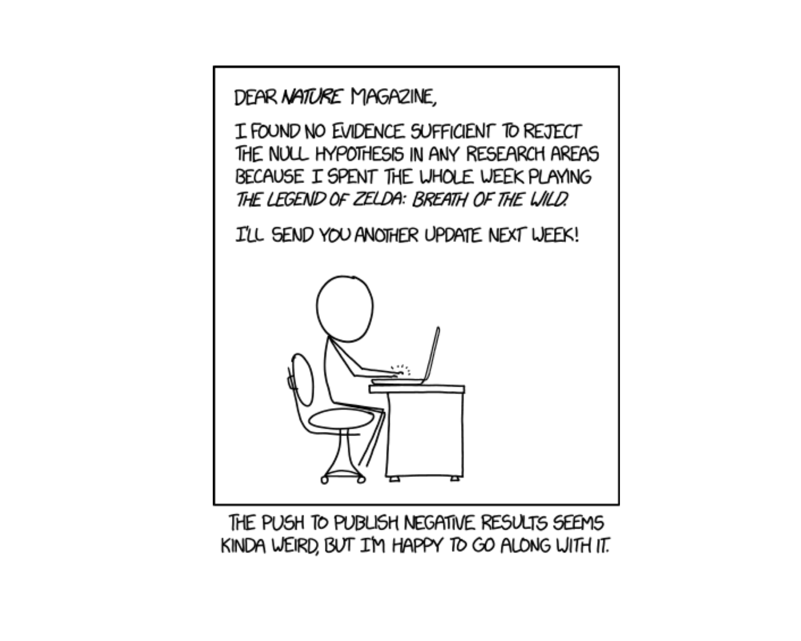
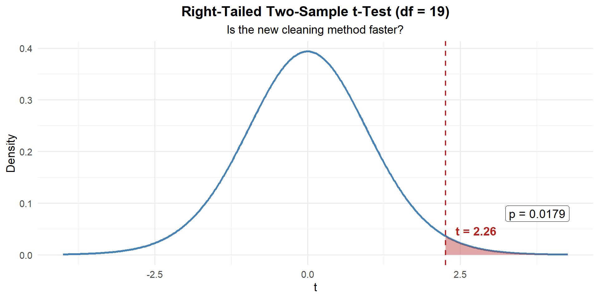
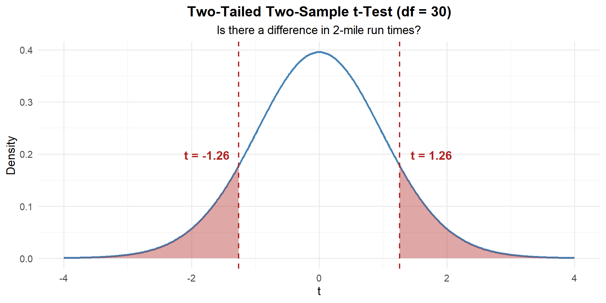
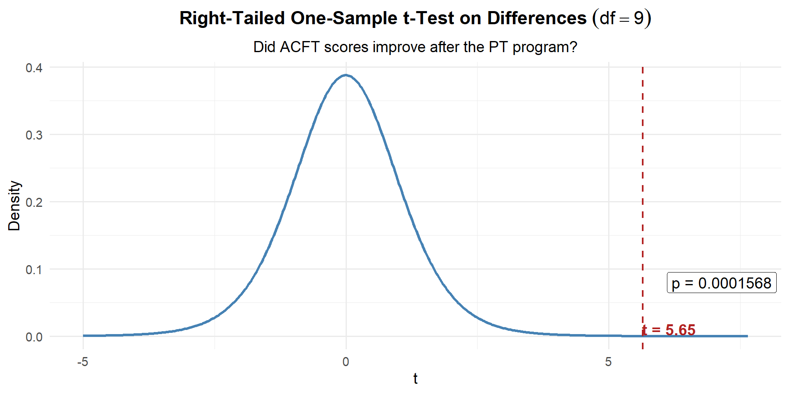

Lesson 23: Two Sample t-Test
WarningA Note from LTC Turner
I’m sorry I can’t be with you today. Thank you to MAJ Day for stepping in and leading class. You’re in great hands — pay attention and ask good questions!

What We Did: Lessons 17–22
NoteLesson 17: Central Limit Theorem
The Central Limit Theorem (CLT): If \(X_1, X_2, \ldots, X_n\) are iid with mean \(\mu\) and standard deviation \(\sigma\), then for large \(n\):
\[\bar{X} \sim N\left(\mu, \frac{\sigma^2}{n}\right)\]
Standard Error of the Mean: \(\sigma_{\bar{X}} = \frac{\sigma}{\sqrt{n}}\)
Rule of thumb: \(n \geq 30\) unless the population is already normal.
NoteLesson 18: Confidence Intervals I
Confidence Interval for a Mean:
| Formula | When to Use | |
|---|---|---|
| Large sample (\(n \geq 30\)) | \(\bar{X} \pm z_{\alpha/2} \cdot \dfrac{\sigma}{\sqrt{n}}\) | Random sample, independence, \(s \approx \sigma\) |
| Small sample (\(n < 30\)) | \(\bar{X} \pm t_{\alpha/2, n-1} \cdot \dfrac{s}{\sqrt{n}}\) | Random sample, independence, population ~ Normal |
Key ideas: Higher confidence → wider interval. Larger \(n\) → narrower interval.
NoteLesson 19: Confidence Intervals II
Confidence Interval for a Proportion:
\[\hat{p} \pm z_{\alpha/2} \cdot \sqrt{\frac{\hat{p}(1-\hat{p})}{n}}\]
Conditions: \(n\hat{p} \geq 10\) and \(n(1-\hat{p}) \geq 10\)
Interpretation: “We are C% confident that [interval] captures the true [parameter in context].” The confidence level describes the method’s long-run success rate, not the probability any single interval is correct.
NoteLesson 20: Intro to Hypothesis Testing
Every hypothesis test follows four steps:
- State hypotheses: \(H_0\) (null — status quo) vs. \(H_a\) (alternative — what we want to show)
- Compute a test statistic: How far is our sample result from what \(H_0\) predicts?
- Find the \(p\)-value: If \(H_0\) were true, how likely is a result this extreme or more?
- Make a decision: If \(p \leq \alpha\), reject \(H_0\). If \(p > \alpha\), fail to reject \(H_0\).
NoteLesson 21: One Sample t-Test & One-Proportion z-Test
One-sample \(t\)-test for a mean (\(\sigma\) unknown):
\[t = \frac{\bar{x} - \mu_0}{s / \sqrt{n}}, \qquad df = n - 1\]
One-proportion \(z\)-test:
\[z = \frac{\hat{p} - p_0}{\sqrt{\dfrac{p_0(1 - p_0)}{n}}}\]
Conditions for proportions: \(np_0 \geq 10\) and \(n(1-p_0) \geq 10\) (use \(p_0\), not \(\hat{p}\)!)
NoteLesson 22: Two-Sample z-Test (Large Samples)
Two-sample \(z\)-test for means (\(n_1 \geq 30\) and \(n_2 \geq 30\)):
\[z = \frac{(\bar{x}_1 - \bar{x}_2) - \Delta_0}{\sqrt{\dfrac{s_1^2}{n_1} + \dfrac{s_2^2}{n_2}}}\]
Conditions: Large samples (\(n_1, n_2 \geq 30\)), independent random samples.
CI for \(\mu_1 - \mu_2\): \((\bar{x}_1 - \bar{x}_2) \pm z_{\alpha/2} \cdot SE\)
Since both samples are large, the CLT kicks in and we use the standard normal \(z\) — no degrees of freedom needed.
Review: The Inference Toolkit
NoteSummary of Confidence Intervals
| One-Sample Mean (Large) | One-Sample Mean (Small) | One Proportion | Two-Sample Mean | Paired Mean | Two Proportions | |
|---|---|---|---|---|---|---|
| Parameter | \(\mu\) | \(\mu\) | \(p\) | \(\mu_1 - \mu_2\) | \(\mu_d\) | |
| Formula | \(\bar{x} \pm z_{\alpha/2} \cdot \dfrac{\sigma}{\sqrt{n}}\) | \(\bar{x} \pm t_{\alpha/2,\, n-1} \cdot \dfrac{s}{\sqrt{n}}\) | \(\hat{p} \pm z_{\alpha/2} \cdot \sqrt{\dfrac{\hat{p}(1-\hat{p})}{n}}\) | \((\bar{x}_1 - \bar{x}_2) \pm t_{\alpha/2} \cdot \sqrt{\dfrac{s_1^2}{n_1} + \dfrac{s_2^2}{n_2}}\) | \(\bar{d} \pm t_{\alpha/2,\, n-1} \cdot \dfrac{s_d}{\sqrt{n}}\) | |
| Conditions | \(n \geq 30\) | Normal pop or \(n \geq 30\) | \(n\hat{p} \geq 10\) & \(n(1-\hat{p}) \geq 10\) | \(n_1, n_2 \geq 30\) | Diffs ~ Normal or \(n \geq 30\) |
NoteSummary of Hypothesis Tests
| One-Sample Mean (Large) | One-Sample Mean (Small) | One Proportion | Two-Sample Mean (Large) | Two-Sample Mean (Small) | Paired Mean | Two Proportions | |
|---|---|---|---|---|---|---|---|
| Parameter | \(\mu\) | \(\mu\) | \(p\) | \(\mu_1 - \mu_2\) | \(\mu_1 - \mu_2\) | \(\mu_d\) | |
| \(H_0\) | \(\mu = \mu_0\) | \(\mu = \mu_0\) | \(p = p_0\) | \(\mu_1 - \mu_2 = \Delta_0\) | \(\mu_1 - \mu_2 = \Delta_0\) | \(\mu_d = \Delta_0\) | |
| \(H_a\) | \(\mu \neq, <, > \mu_0\) | \(\mu \neq, <, > \mu_0\) | \(p \neq, <, > p_0\) | \(\mu_1 - \mu_2 \neq, <, > 0\) | \(\mu_1 - \mu_2 \neq, <, > 0\) | \(\mu_d \neq, <, > 0\) | |
| Test Statistic | \(z = \dfrac{\bar{x} - \mu_0}{\sigma / \sqrt{n}}\) | \(t = \dfrac{\bar{x} - \mu_0}{s / \sqrt{n}}\) | \(z = \dfrac{\hat{p} - p_0}{\sqrt{p_0(1-p_0)/n}}\) | \(z = \dfrac{\bar{x}_1 - \bar{x}_2}{\sqrt{s_1^2/n_1 + s_2^2/n_2}}\) | \(t = \dfrac{\bar{x}_1 - \bar{x}_2}{\sqrt{s_1^2/n_1 + s_2^2/n_2}}\) | \(t = \dfrac{\bar{d} - \Delta_0}{s_d / \sqrt{n}}\) | |
| Distribution | \(N(0,1)\) | \(t_{n-1}\) | \(N(0,1)\) | \(N(0,1)\) | \(t_{df}\) | \(t_{n-1}\) | |
| Left-tailed \(p\)-value | pnorm(z) |
pt(t, df=n-1) |
pnorm(z) |
pnorm(z) |
pt(t, df) |
pt(t, df=n-1) |
|
| Right-tailed \(p\)-value | 1 - pnorm(z) |
1 - pt(t, df=n-1) |
1 - pnorm(z) |
1 - pnorm(z) |
1 - pt(t, df) |
1 - pt(t, df=n-1) |
|
| Two-tailed \(p\)-value | 2*(1 - pnorm(abs(z))) |
2*(1 - pt(abs(t), df=n-1)) |
2*(1 - pnorm(abs(z))) |
2*(1 - pnorm(abs(z))) |
2*(1 - pt(abs(t), df)) |
2*(1 - pt(abs(t), df=n-1)) |
|
| Conditions | \(n \geq 30\) | Normal pop or \(n \geq 30\) | \(np_0 \geq 10\) & \(n(1-p_0) \geq 10\) | \(n_1, n_2 \geq 30\) | Populations ~ Normal | Diffs ~ Normal or \(n \geq 30\) |
Decision rule is always the same: \(p \leq \alpha\) → Reject \(H_0\). \(p > \alpha\) → Fail to reject \(H_0\).
What We’re Doing: Lesson 23
Objectives
- Review the two-sample \(z\)-test for large samples
- Test \(\mu_1 - \mu_2\) with small independent samples using the two-sample \(t\)-test
- Identify paired versus independent designs
- Test a paired mean difference using the paired \(t\)-test
Required Reading
Devore, Sections 9.2, 9.3
Break!
Reese
Cal
The Takeaway for Today
ImportantToday’s Key Ideas
Small-sample two-sample \(t\)-test:
\[t = \frac{(\bar{x}_1 - \bar{x}_2) - \Delta_0}{\sqrt{\dfrac{s_1^2}{n_1} + \dfrac{s_2^2}{n_2}}}, \qquad df = \frac{\left(\dfrac{s_1^2}{n_1} + \dfrac{s_2^2}{n_2}\right)^2}{\dfrac{\left(s_1^2/n_1\right)^2}{n_1 - 1} + \dfrac{\left(s_2^2/n_2\right)^2}{n_2 - 1}}\]
Same formula as the large-sample \(z\), but now we use the \(t\)-distribution because small samples mean more uncertainty in our estimate of \(SE\).
Paired \(t\)-test: Compute \(d_i = x_{1i} - x_{2i}\), then it’s just a one-sample \(t\)-test on \(\bar{d}\):
\[t = \frac{\bar{d} - \Delta_0}{s_d / \sqrt{n}}, \qquad df = n - 1\]
The paired \(t\)-test is not a new test — it’s the same one-sample \(t\)-test from Lesson 21, applied to the vector of differences.
Review: The Two-Sample \(z\)-Test (Large Samples)
Last class we learned how to compare two independent group means when both samples are large (\(n_1 \geq 30\), \(n_2 \geq 30\)):
\[z = \frac{(\bar{x}_1 - \bar{x}_2) - \Delta_0}{\sqrt{\dfrac{s_1^2}{n_1} + \dfrac{s_2^2}{n_2}}}\]
where \(\Delta_0\) is the hypothesized difference (usually 0). Because both samples are large, the CLT guarantees the sampling distribution of \(\bar{x}_1 - \bar{x}_2\) is approximately normal, so we use the \(z\)-distribution and pnorm() for \(p\)-values.
But what happens when one or both samples are small?
New Material: The Two-Sample \(t\)-Test (Small Samples)
When sample sizes are small, \(s_1\) and \(s_2\) are less reliable estimates of \(\sigma_1\) and \(\sigma_2\). This extra uncertainty means the \(z\)-distribution is too optimistic — it underestimates how spread out our test statistic really is.
The fix? Use the \(t\)-distribution, which has heavier tails to account for that uncertainty. Same idea as switching from \(z\) to \(t\) for a one-sample test when \(\sigma\) is unknown and \(n\) is small.
ImportantTwo-Sample t-Test (Small Samples)
Hypotheses:
\(H_0: \mu_1 - \mu_2 = 0\)
\(H_a: \mu_1 - \mu_2 \neq, <, > \ 0\)
Test statistic: (same formula as the large-sample \(z\)!)
\[t = \frac{(\bar{x}_1 - \bar{x}_2) - \Delta_0}{\sqrt{\dfrac{s_1^2}{n_1} + \dfrac{s_2^2}{n_2}}}\]
where \(\Delta_0\) is the hypothesized difference (usually 0).
Degrees of freedom:
\[df = \frac{\left(\dfrac{s_1^2}{n_1} + \dfrac{s_2^2}{n_2}\right)^2}{\dfrac{\left(s_1^2/n_1\right)^2}{n_1 - 1} + \dfrac{\left(s_2^2/n_2\right)^2}{n_2 - 1}}\]
Note: this is not simply \(n_1 + n_2 - 2\). When computing by hand, round down to the nearest integer — this is the conservative choice because a smaller \(df\) gives heavier tails, making it harder to reject \(H_0\). R computes the exact \(df\) for you.
Conditions: Independent random samples, both populations approximately normal (check with histograms/QQ plots).
\(p\)-values: Use pt() with the appropriate \(df\).
WarningWhen to Use z vs. t
| Large samples (\(n_1, n_2 \geq 30\)) | Small samples | |
|---|---|---|
| Distribution | \(z\) (standard normal) | \(t\) (with \(df\)) |
| \(p\)-values | pnorm() |
pt() |
| Normality check | Not needed (CLT) | Required |
The test statistic formula is identical — the only difference is which distribution you use to find the \(p\)-value.
Example 1: Rifle Cleaning Time
A company XO wants to know if a new rifle cleaning procedure is faster than the standard method. He randomly assigns Soldiers to two groups:
| Standard Method | New Method | |
|---|---|---|
| \(n\) | 12 | 10 |
| \(\bar{x}\) (min) | 28.5 | 24.3 |
| \(s\) | 4.8 | 3.9 |
These are small samples, so we use the two-sample \(t\)-test.
Step 1: State the Hypotheses
The XO suspects the new method is faster (lower times):
\[H_0: \mu_1 - \mu_2 = 0 \qquad \text{vs.} \qquad H_a: \mu_1 - \mu_2 > 0\]
where \(\mu_1\) = standard, \(\mu_2\) = new.
Step 2: Compute the Test Statistic
\[t = \frac{(\bar{x}_1 - \bar{x}_2) - \Delta_0}{SE} = \frac{(28.5 - 24.3) - 0}{\sqrt{\dfrac{4.8^2}{12} + \dfrac{3.9^2}{10}}} = \frac{4.2}{\sqrt{1.920 + 1.521}} = \frac{4.2}{1.855} = 2.26\]
n1 <- 12; n2 <- 10
xbar1 <- 28.5; xbar2 <- 24.3
s1 <- 4.8; s2 <- 3.9
se <- sqrt(s1^2 / n1 + s2^2 / n2)
t_stat <- (xbar1 - xbar2) / se
t_stat[1] 2.264159Degrees of freedom:
\[df = \frac{\left(\dfrac{s_1^2}{n_1} + \dfrac{s_2^2}{n_2}\right)^2}{\dfrac{\left(s_1^2/n_1\right)^2}{n_1 - 1} + \dfrac{\left(s_2^2/n_2\right)^2}{n_2 - 1}} = \frac{\left(\dfrac{4.8^2}{12} + \dfrac{3.9^2}{10}\right)^2}{\dfrac{\left(4.8^2/12\right)^2}{11} + \dfrac{\left(3.9^2/10\right)^2}{9}} = \frac{(1.920 + 1.521)^2}{\dfrac{1.920^2}{11} + \dfrac{1.521^2}{9}} = \frac{3.441^2}{\dfrac{3.686}{11} + \dfrac{2.314}{9}} = \frac{11.840}{0.335 + 0.257} = 19.99 \implies \lfloor df \rfloor = 19\]
df <- (s1^2/n1 + s2^2/n2)^2 / ((s1^2/n1)^2/(n1-1) + (s2^2/n2)^2/(n2-1))
df[1] 19.99486Step 3: Find the \(p\)-Value
Right-tailed with \(df = 19\):

p_value <- 1 - pt(t_stat, df = df)
p_value[1] 0.01741865Step 4: Decide and Conclude
\(p = 0.0174 \leq 0.05\). We reject \(H_0\). At the 5% significance level, there is sufficient evidence that the new rifle cleaning method is faster than the standard method. The average time savings was 4.2 minutes.
Example 2: PT Run Times (Small Samples)
A battalion fitness officer wants to compare 2-mile run times between two small units:
| HHC | BSB | |
|---|---|---|
| \(n\) | 15 | 18 |
| \(\bar{x}\) (min) | 15.2 | 16.1 |
| \(s\) | 1.8 | 2.3 |
Is there a difference in mean run times?
\[H_0: \mu_1 - \mu_2 = 0 \qquad \text{vs.} \qquad H_a: \mu_1 - \mu_2 \neq 0\]
n1 <- 15; n2 <- 18
xbar1 <- 15.2; xbar2 <- 16.1
s1 <- 1.8; s2 <- 2.3
se <- sqrt(s1^2 / n1 + s2^2 / n2)
t_stat <- (xbar1 - xbar2) / se
df <- (s1^2/n1 + s2^2/n2)^2 / ((s1^2/n1)^2/(n1-1) + (s2^2/n2)^2/(n2-1))
t_stat[1] -1.260389df[1] 30.90224\[df = \frac{\left(\dfrac{1.8^2}{15} + \dfrac{2.3^2}{18}\right)^2}{\dfrac{\left(1.8^2/15\right)^2}{14} + \dfrac{\left(2.3^2/18\right)^2}{17}} = \frac{\left(0.216 + 0.294\right)^2}{\dfrac{0.216^2}{14} + \dfrac{0.294^2}{17}} = \frac{0.260}{0.00333 + 0.00508} = 30.9 \implies \lfloor df \rfloor = 30\]

p_value <- 2 * (1 - pt(abs(t_stat), df = df))
p_value[1] 0.2169634\(p = 0.217 > 0.05\). We fail to reject \(H_0\). At the 5% significance level, there is not sufficient evidence of a difference in mean 2-mile run times between HHC and BSB.
New Material: The Paired \(t\)-Test
When Are Samples NOT Independent?
So far we’ve compared two separate groups. But sometimes the two “groups” are really the same individuals measured twice:
- Same Soldiers’ ACFT scores before and after a training program
- Same cadets’ performance on two different tasks
- Same rifles tested with old vs. new cleaning method
These are paired observations. The two measurements are not independent — a Soldier who scores high before will probably score high after, too.
The Key Insight: Paired Data → One-Sample Problem
Here’s the beautiful thing about paired data. Once you compute the differences, you’re back to a one-sample problem.
| Soldier | Before | After | \(d_i = \text{After} - \text{Before}\) |
|---|---|---|---|
| 1 | 445 | 460 | 15 |
| 2 | 478 | 491 | 13 |
| 3 | 512 | 520 | 8 |
| … | … | … | … |
You started with two columns. Now you have one column of differences. And you already know how to do a one-sample \(t\)-test from Lesson 21!
The question “Did scores improve?” becomes “Is the mean of these differences greater than zero?”
ImportantThe Paired t-Test Is Just a One-Sample t-Test on Differences
Given \(n\) paired observations, define \(d_i = x_{1i} - x_{2i}\).
Now you have a single sample \(d_1, d_2, \ldots, d_n\).
Hypotheses: \(H_0: \mu_d = 0\) vs. \(H_a: \mu_d \neq, <, > \ 0\)
Test statistic: (this IS the one-sample \(t\)-test!)
\[t = \frac{\bar{d} - \Delta_0}{s_d / \sqrt{n}}, \qquad df = n - 1\]
Conditions: Differences are approximately normal (or \(n \geq 30\)).
That’s it. No new formula. No new concept. Just compute differences, then do what you already know.
WarningWhy Not Use a Two-Sample Test on Paired Data?
If we ignored the pairing and ran a two-sample test, we’d treat 445 and 460 as if they came from unrelated people. All that natural person-to-person variability would inflate our standard error, making it harder to detect a real effect. Pairing removes between-subject variability and gives us more power.
Example 3: ACFT Scores Before and After a PT Program
A company commander puts 10 Soldiers through a new 6-week PT program:
| Soldier | 1 | 2 | 3 | 4 | 5 | 6 | 7 | 8 | 9 | 10 |
|---|---|---|---|---|---|---|---|---|---|---|
| Before | 445 | 478 | 512 | 390 | 467 | 501 | 423 | 489 | 455 | 438 |
| After | 460 | 491 | 520 | 412 | 475 | 498 | 441 | 502 | 470 | 450 |
Step 1: Compute the differences (this is the key step!)
before <- c(445, 478, 512, 390, 467, 501, 423, 489, 455, 438)
after <- c(460, 491, 520, 412, 475, 498, 441, 502, 470, 450)
d <- after - before
d [1] 15 13 8 22 8 -3 18 13 15 12Now we have a single vector of numbers. From here it’s a one-sample \(t\)-test.
Step 2: State the Hypotheses
Did scores improve? That means \(\mu_d > 0\):
\[H_0: \mu_d = 0 \qquad \text{vs.} \qquad H_a: \mu_d > 0\]
Step 3: Compute the Test Statistic (one-sample \(t\) on the differences)
n <- length(d)
d_bar <- mean(d)
s_d <- sd(d)
d_bar[1] 12.1s_d[1] 6.773314\[t = \frac{\bar{d} - \Delta_0}{s_d / \sqrt{n}} = \frac{12.1 - 0}{7.17 / \sqrt{10}} = \frac{12.1}{2.267} = 5.34\]
delta_0 <- 0 # null hypothesized difference
t_stat <- (d_bar - delta_0) / (s_d / sqrt(n))
t_stat[1] 5.649164Step 4: Find the \(p\)-Value
One-sample \(t\) with \(df = n - 1 = 9\):

p_value <- 1 - pt(t_stat, df = n - 1)
p_value[1] 0.0001569676Step 5: Decide and Conclude
\(p < 0.001 \leq 0.05\). We reject \(H_0\). At the 5% significance level, there is strong evidence that the PT program improved ACFT scores. The average improvement was 12.1 points.
Confidence Interval for the Mean Difference
Just like any one-sample \(t\) CI:
\[\bar{d} \pm t_{\alpha/2, \, n-1} \cdot \frac{s_d}{\sqrt{n}}\]
t_crit <- qt(0.975, df = n - 1)
me <- t_crit * s_d / sqrt(n)
c(d_bar - me, d_bar + me)[1] 7.254663 16.945337We are 95% confident that the true average ACFT improvement is between 7.3 and 16.9 points.
Since the entire interval is above zero, this is consistent with rejecting \(H_0\).
Paired or Independent? How Do You Tell?
ImportantThe Key Question
Ask yourself: Is there a natural one-to-one pairing between the observations?
- Paired: Same person measured twice, left vs. right, before vs. after, matched subjects
- Independent: Two separate groups with no connection between individual observations
| Scenario | Design |
|---|---|
| 50 Soldiers’ ACFT scores before and after a PT program | Paired |
| 30 cadets from Co A vs. 35 cadets from Co B on a math exam | Independent |
| 20 rifles tested with old method, then same 20 with new method | Paired |
| Reaction times of 25 caffeine users vs. 25 non-users | Independent |
| Each of 25 cadets rates difficulty of two courses | Paired |
The Updated Inference Toolkit
NoteSummary of Two-Sample Hypothesis Tests
| Two-Sample \(z\) (Large) | Two-Sample \(t\) (Small) | Paired \(t\) | |
|---|---|---|---|
| Parameter | \(\mu_1 - \mu_2\) | \(\mu_1 - \mu_2\) | \(\mu_d\) |
| \(H_0\) | \(\mu_1 - \mu_2 = 0\) | \(\mu_1 - \mu_2 = 0\) | \(\mu_d = 0\) |
| Test Stat | \(z = \dfrac{\bar{x}_1 - \bar{x}_2}{\sqrt{s_1^2/n_1 + s_2^2/n_2}}\) | \(t = \dfrac{\bar{x}_1 - \bar{x}_2}{\sqrt{s_1^2/n_1 + s_2^2/n_2}}\) | \(t = \dfrac{\bar{d} - \Delta_0}{s_d / \sqrt{n}}\) |
| Distribution | \(N(0,1)\) | \(t_{df}\) | \(t_{n-1}\) |
| Conditions | \(n_1, n_2 \geq 30\) | Populations ~ Normal | Differences ~ Normal (or \(n \geq 30\)) |
| Design | Independent groups | Independent groups | Same subjects measured twice |
Decision rule is always the same: \(p \leq \alpha\) → Reject \(H_0\). \(p > \alpha\) → Fail to reject \(H_0\).
Board Problems
Problem 1: Body Armor Weight
Two companies test different body armor configurations. The S4 wants to know if there’s a difference in average load weight.
| Config A | Config B | |
|---|---|---|
| \(n\) | 10 | 12 |
| \(\bar{x}\) (lbs) | 34.2 | 31.8 |
| \(s\) | 3.5 | 4.1 |
NoteQuestions
Is this paired or independent? Why?
State the hypotheses for a two-tailed test.
Compute the test statistic, degrees of freedom, and \(p\)-value.
At \(\alpha = 0.05\), state your conclusion in context.
TipAnswers
Independent. Different Soldiers in each group — no natural pairing.
\(H_0: \mu_A - \mu_B = 0\) vs. \(H_a: \mu_A - \mu_B \neq 0\)
n1 <- 10; n2 <- 12
xbar1 <- 34.2; xbar2 <- 31.8
s1 <- 3.5; s2 <- 4.1
se <- sqrt(s1^2 / n1 + s2^2 / n2)
t_stat <- (xbar1 - xbar2) / se
df <- (s1^2/n1 + s2^2/n2)^2 / ((s1^2/n1)^2/(n1-1) + (s2^2/n2)^2/(n2-1))
p_value <- 2 * (1 - pt(abs(t_stat), df = df))
t_stat[1] 1.481077df[1] 19.97797p_value[1] 0.1541863\[df = \frac{\left(\dfrac{3.5^2}{10} + \dfrac{4.1^2}{12}\right)^2}{\dfrac{\left(3.5^2/10\right)^2}{9} + \dfrac{\left(4.1^2/12\right)^2}{11}} = \frac{\left(1.225 + 1.401\right)^2}{\dfrac{1.225^2}{9} + \dfrac{1.401^2}{11}} = \frac{6.895}{0.167 + 0.178} = 19.98 \implies \lfloor df \rfloor = 19\]
- \(p = 0.1542 > 0.05\), so we fail to reject \(H_0\). At the 5% significance level, there is not sufficient evidence of a difference in average load weight between the two configurations.
Problem 3: Paired or Independent?
For each scenario, state whether the data are paired or independent.
NoteQuestions
40 cadets from 1st Regiment vs. 45 cadets from 2nd Regiment compare ACFT scores.
30 patients have blood pressure measured before and 1 hour after taking a new medication.
A study compares test scores of 20 students who used a study app vs. 20 who did not.
Each of 15 Soldiers fires a qualification course with iron sights, then again with an optic.
First-born twins’ GPA compared to second-born twins’ GPA for 25 pairs.
TipAnswers
Independent. Different cadets in each group.
Paired. Same patients before and after — each patient is their own control.
Independent. Different students in each group.
Paired. Same Soldiers fire under both conditions.
Paired. Each twin pair creates a natural match.
Problem 4: Screen Time Reduction
A wellness program claims to reduce cadets’ daily screen time. 20 cadets report average daily screen time (hours) before and after a 4-week program. Summary statistics for the differences (Before \(-\) After):
| \(n\) | \(\bar{d}\) | \(s_d\) | |
|---|---|---|---|
| 20 | 0.8 | 1.5 |
NoteQuestions
State the hypotheses.
Compute the test statistic and \(p\)-value.
At \(\alpha = 0.05\), state your conclusion in context.
Construct a 95% CI for \(\mu_d\). Does it support the test result?
TipAnswers
\(H_0: \mu_d = 0\) vs. \(H_a: \mu_d > 0\) (screen time decreased)
n <- 20; d_bar <- 0.8; s_d <- 1.5
t_stat <- d_bar / (s_d / sqrt(n))
t_stat[1] 2.385139p_value <- 1 - pt(t_stat, df = n - 1)
p_value[1] 0.01382281\(p = 0.0138 \leq 0.05\), so we reject \(H_0\). At the 5% significance level, there is sufficient evidence that the wellness program reduced daily screen time.
t_crit <- qt(0.975, df = n - 1)
me <- t_crit * s_d / sqrt(n)
c(d_bar - me, d_bar + me)[1] 0.09797839 1.50202161We are 95% confident that the true average screen time reduction is between 0.1 and 1.5 hours per day. The entire interval is above 0, consistent with rejecting \(H_0\).
Before You Leave
Today
- Two-sample \(t\)-test: Same formula as the large-sample \(z\), but use the \(t\)-distribution when samples are small
- Paired \(t\)-test: Compute differences \(d_i\), then it’s a one-sample \(t\)-test — nothing new!
- Paired vs. Independent: Ask “are these the same subjects measured twice?”
- Key difference: Independent → use \(SE = \sqrt{s_1^2/n_1 + s_2^2/n_2}\); Paired → compute differences first, then use \(SE = s_d/\sqrt{n}\)
Any questions?
Next Lesson
Lesson 24: Two Population Proportions
- Check large-sample conditions for two proportions
- Test \(p_1 - p_2\) using pooled SE
- Construct and interpret a CI for \(p_1 - p_2\)
Upcoming Graded Events
- WebAssign 9.2, 9.3 - Due before Lesson 24
- WPR II - Lesson 27